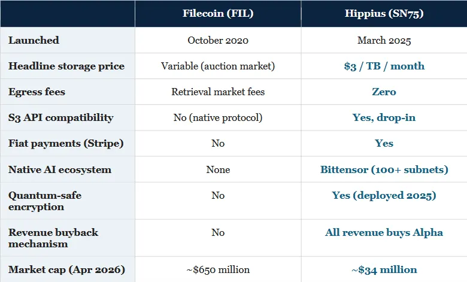

A Bittensor subnet taking on AWS at one-thirtieth the cost
Every era of computing eventually settles on a memory layer. The mainframe had tape. The PC had the hard drive. The internet had the relational database. The cloud had Amazon S3. Decentralised AI, until very recently, had nothing at all.
Bittensor — the decentralised AI network now runs more than a hundred specialised subnets producing autonomous coding agents, drug discovery pipelines, computer vision models, and foundation models trained permissionlessly across the open internet. Yet for its first eighteen months of meaningful operation, this decentralised AI economy had no native place to put the data its subnets generated. Model checkpoints, training datasets, inference outputs, user files — all of it had to be offloaded to Amazon, Google, or Cloudflare. A decentralised AI network paying rent, every single day, to the very centralised incumbents it was built to disrupt makes no sense!
Hippius (Subnet 75) is the answer. Built on its own Substrate blockchain and bridged into the Bittensor economy, Hippius delivers S3-compatible object storage and IPFS-pinned decentralised storage at a headline price of three US dollars per terabyte per month, with zero egress fees. Amazon S3 charges around one hundred and sixteen dollars for the same terabyte. Google Cloud Storage charges roughly one hundred and forty-three. Storj — the leading Web2-style decentralised competitor — charges eleven. On Hippius’s own published calculator, the service comes out at almost exactly thirty times cheaper than the hyperscalers.
The commercial logic writes itself. Hippius is not a science experiment hunting for a use case; it is a lower-cost version of a product that every AI company on earth already buys. It is already being used as the default storage layer by other Bittensor subnets: Vidaio (SN85) pipes its AI-upscaled video content into Hippius, Pull Weights has built a HuggingFace-style dataset repository on top of it with seven models already live, and Mark Jeffrey of the Bittensor Fund has publicly flagged Hippius as one-tenth the cost of every other option, now available as a native skill on the OpenClaw agent marketplace. It accepts payment in fiat via Stripe, in TAO, or in its own Alpha token, and all service revenue is used to buy back and burn Alpha from the open market. The network itself is no longer theoretical. Five hundred nodes across fifteen countries are live today, from Helsinki to Singapore to Tokyo, with seventy-seven percent of miners delivering sub-one-millisecond latency and an average of just one-point-four-two milliseconds. Quantum-safe encryption has already been deployed. Hippius became the first Bittensor subnet ever to list on a centralised exchange when MEXC opened trading in October 2025. And the team is led by Jonathan Sheely as CEO with Chris Hobel as CTO, supported by co-founder Mog, who also happens to be the founder of Taostats — the most widely used analytics platform in the entire Bittensor ecosystem. This is not a team that appeared out of nowhere.
For investors, the most striking fact is the valuation gap. Hippius currently trades at a market capitalisation of thirty-four million US dollars. Even Filecoin — the incumbent Crypto decentralised storage protocol, launched in 2020 and backed by Protocol Labs, Andreessen Horowitz, and Sequoia — trades at a market capitalisation of around six hundred and fifty million dollars and a fully diluted valuation of roughly one-point-six billion, despite a cost structure Hippius beats on its own published benchmarks and no native connection whatsoever to the fastest-growing decentralised AI network in the world. This means Hippius trades at roughly six percent of Filecoin’s market capitalisation while offering, in our view, a superior product with a superior distribution channel. So even comparing like with like (Crypto protocol with Crypto protocol), there is a massive valuation gap.
This report sets out why we believe that gap closes.
In 1829, the Rocket steam locomotive won the Rainhill Trials and ushered in the age of the railway. Within twenty years, Britain had laid fourteen thousand kilometres of track and fundamentally rewired the geography of commerce. But the railways alone were not enough. The revolution only reached its full economic potential when the warehouses, the freight yards, and the goods depots sprang up alongside the lines. Without somewhere to store the cargo that arrived at the station, the locomotive was just a very fast way to deliver goods to an empty platform.
Bittensor is the Rocket. It has, by any reasonable measure, become the most credible attempt yet to build an open and permissionless market for artificial intelligence. Over twenty thousand GPUs across its subnets — including thousands of NVIDIA H200s — are already running AI workloads, a figure Mark Jeffrey of Still Core Capital has noted amounts to roughly ten percent of the GPU capacity at Elon Musk’s flagship Colossus cluster in Tennessee. The network trains and serves language models (Chutes at SN64 is already a one-hundred-million-dollar subnet doing inference eighty-five percent cheaper than AWS), writes and deploys production code (Ridges AI at SN62 hit 74.4% on SWE-Bench within its first forty-five days), predicts sports outcomes, screens drug candidates, and, most recently, trained the same size as Meta Covenant-72B foundation model permissionlessly across the open internet — the achievement that triggered the Jensen Huang and Chamath Palihapitiya endorsements on the All-In Podcast in March 2026.
The scale of the missing piece is hard to overstate. The global cloud storage market is currently worth around one hundred and thirty billion dollars and is forecast to exceed four hundred billion by 2032. Amazon Web Services alone generated over one hundred and ten billion dollars in 2024, of which storage is one of the most profitable line items. Every decentralised AI application needs storage, and until Hippius launched, every one of them was paying the very incumbents their subnet was designed to make obsolete. The opportunity is not merely to build a decentralised Filecoin. It is to be the warehouse next to the railway line.
Strip away the blockchain language and Hippius is, at its simplest, a cheaper version of Amazon S3 that happens to be run by five hundred independent operators across fifteen countries rather than a single American megacorporation.
Hippius is Subnet 75 on Bittensor, launched in March 2025 by a team operating under the banner of The Nerve Lab. It is built on its own custom Substrate blockchain — the same framework that underpins Polkadot — which gives it a native ledger, native consensus (BABE for block production, Nominated Proof-of-Stake for security), and its own Alpha token. The Hippius chain is bridged into the broader Bittensor network, which means it earns a share of TAO emissions from the main chain based on the quality and volume of the storage service it provides, while its own Alpha token trades freely against TAO in Bittensor’s Dynamic TAO automated market maker.
From the user’s perspective, none of that blockchain plumbing matters. A developer logs into the console at console.hippius.com, chooses their storage type, pays in fiat via Stripe or in TAO via a Bittensor wallet, and receives credits priced at one dollar each. Behind the scenes, those credits are minted on the Hippius chain and redeemed against two storage products running in parallel.
For files that need permanence and verifiability, Hippius pins content to the Interplanetary File System and replicates it across multiple miners. Data is addressed by cryptographic hash, which means it cannot be altered without detection, and validators continuously monitor availability and reassign storage when nodes fail or disappear. This is the product for AI datasets, public research archives, NFT metadata, immutable audit trails, and any application that needs tamper-proof long-term storage.
For applications that need speed and familiarity, Hippius offers an S3-compatible object storage service that drops straight into any existing codebase written against Amazon’s API. No rewrites, no new tooling, no developer friction. Under the hood, files are erasure-coded and replicated across the miner network for reliability, and the service supports private buckets, access controls, and enterprise workflows. This is the product that is genuinely meant to take share from AWS. The killer feature, frankly, is the price. At three US dollars per terabyte per month with zero egress fees, Hippius undercuts Amazon by a factor of roughly thirty. But the pricing advantage gets even more extreme in the enterprise tier: one independent analyst writing in A Bittensor Journey has calculated that Hippius comes out as much as two thousand three hundred and eighty-six times cheaper than Dropbox at certain enterprise price points, primarily because Hippius does not charge for egress and most traditional providers do, punishingly.
Mark Jeffrey is not a passing commentator. He runs the Bittensor Fund at Still Core Capital and hosts Hash Rate, the longest-running Bittensor podcast, with a following of sixty-nine thousand on X. When he tells the OpenClaw agent marketplace community to use Hippius for their S3 needs, capital follows. And as of February 2026, the Hippius SKILL is live on ClawHub as a native integration for every agent deployed on that platform — meaning any AI agent built on OpenClaw can now read from and write to Hippius storage as naturally as it would AWS.
A year into launch, Hippius has stopped being a white paper and started being a network. The numbers speak for themselves.
The network has already expanded to over five hundred nodes spread across at least fifteen countries, with four hundred and more active miners supplying storage capacity. The geographic distribution stretches from Helsinki to Singapore to New York to Tokyo, giving the network genuine global redundancy of the kind a centralised data centre can never offer. Seventy-seven percent of Hippius miners deliver sub-one-millisecond latency, with a network-wide average of one-point-four-two milliseconds. For context, Amazon S3’s typical request latency is measured in tens of milliseconds. Hippius is not just cheaper — at the point of read, it is faster.
On the security side, Hippius rolled out quantum-safe encryption across the network in late 2025, putting it ahead of every hyperscaler on post-quantum cryptography. The network is already processing petabytes of data daily, and all service revenue is used to buy back Alpha tokens from the open market — the classic protocol-revenue flywheel that links real-world usage directly to token economics.
In October 2025, Hippius became the first Bittensor subnet in history to list on a centralised exchange when MEXC opened SN75 trading via its kickstarter programme. In the same period, the team enabled Stripe payments for fiat customers, meaning any company with a credit card can now buy decentralised storage from Hippius without ever touching Crypto. That single integration dramatically lowers the adoption barrier for Web2 enterprise buyers.
The customer list, meanwhile, is already expanding within the Bittensor ecosystem and beginning to reach beyond it. Vidaio (Subnet 85), an AI video upscaling service that demonstrates ninety-five percent file size reduction from standard definition to 4K, has built its streaming pipeline directly on top of Hippius storage. Pull Weights, a decentralised alternative to HuggingFace, has launched a live service with seven AI models already hosted on Hippius and a free tier available to the public. RESI (the real-estate oracle subnet) has its storage layer running on Hippius. And perhaps most importantly: through the OpenClaw agent marketplace integration, any of the more than two hundred and forty-five agentic AI applications in the ClawHub index can now use Hippius as their native storage backend.
DSV — the regulated digital asset fund whose approach is documented in the Revenue Search podcast series — has named Hippius as one of its “force-multiplying” subnet investments, singling out the protocol for its combination of real revenue, commercial traction, and ecosystem leverage.
The question every investor eventually has to ask about a decentralised storage project is simple: why not just buy Filecoin?
Filecoin was the first serious attempt to build a decentralised storage protocol. It was launched in October 2020 by Protocol Labs — the same team behind IPFS — with the backing of Andreessen Horowitz, Sequoia, and Pantera Capital. It raised over two hundred million dollars in its 2017 ICO, one of the largest in history at the time. It has a functioning product, real storage providers, and a live network that has been operating for more than five years.
At the time of writing, Filecoin trades at a market capitalisation of around six hundred and fifty million US dollars. Hippius, by contrast, trades at a market capitalisation of thirty-four million dollars — roughly two percent of Filecoin’s market cap. The question is whether that valuation gap is justified by fundamental differences between the two protocols.
We believe it is not — and that the direction of travel runs overwhelmingly in the other direction.

On every dimension that matters to a commercial buyer of cloud storage in 2026 — price, developer experience, payment rails, ecosystem integration, security posture, and value accrual to token holders — Hippius is either ahead of Filecoin or in a different league. And yet it trades at somewhere around one-fiftieth of Filecoin’s market capitalisation. If Hippius were to converge merely to Filecoin’s current six-hundred-and-fifty-million-dollar market cap, that would imply a return of fifty times.
It is also worth noting what Hippius compares to in the traditional world. Amazon S3 alone is estimated to generate between ten and fifteen billion dollars in annual revenue for AWS; the parent company Amazon trades at a market capitalisation above two trillion dollars. Storj, a Web2-style decentralised storage competitor without Bittensor’s AI backbone, was last valued privately at north of one hundred million dollars. Against that entire comparator set, Hippius is trading as if it were a hobby project.
Investors reasonably ask why any decentralised storage project can compete with Amazon, Google, or Microsoft for long. The answer lies in five structural advantages that capital alone cannot buy.
Amazon operates data centres. It pays for land, for buildings, for power, for cooling, for physical security, for network redundancy, and for thousands of employees to keep it all running. That cost base is substantial and fundamentally immovable. Hippius, by contrast, coordinates unused hard drive space that already exists, in five hundred locations, paid for by five hundred independent operators who treat the revenue as a yield on hardware they already own. There is no data centre to build and no skeleton staff to pay. The marginal cost of adding a terabyte of Hippius storage is close to zero. The marginal cost of adding a terabyte of AWS storage is the capex on the next data centre. This is not a gap Amazon can close by cutting prices — it is a structural cost difference baked into the two business models.
Every major cloud provider — AWS, Google, Microsoft Azure, Dropbox — charges punitive egress fees to download data out of their network. These charges exist for one reason only: to make it as painful as possible to leave. It is the digital equivalent of an exit visa. Hippius charges nothing for egress. Zero. That single pricing decision neutralises the lock-in that has sustained hyperscaler margins for two decades and makes data portability a feature rather than a threat.
This is the moat that makes Hippius genuinely unique. No other decentralised storage project — not Filecoin, not Arweave, not Storj, not Sia — has native integration with the fastest-growing decentralised AI network on earth. Every Bittensor subnet generating datasets, model checkpoints, or inference outputs is a potential Hippius customer whose TAO-denominated payments flow naturally through the same token economy. When a new subnet launches, Hippius is the path of least resistance. When a subnet needs to scale, Hippius is the default. This is distribution earned not through marketing spend but through architectural integration, and it cannot be replicated by a project that sits outside Bittensor.
Mog, a co-founder of Hippius, is also the founder of Taostats.io — the single most widely used analytics platform in the Bittensor ecosystem and the de facto block explorer for the network. This matters enormously. It means the Hippius team has been embedded in the Bittensor community for years, understands the protocol from the inside, and carries the trust of validators, miners, and subnet operators in a way that a newcomer never could. When Hippius ships an update, the Taostats community listens. When a subnet needs a storage recommendation, the path leads back through Mog’s reputation. Credibility in crypto is harder to build than code, and Hippius has it by inheritance.
Every dollar of revenue Hippius earns through its console — fiat, TAO, or Alpha — is used to buy back Alpha tokens from the open market. This creates a direct mechanical link between real-world usage and token price. It is the antithesis of subnets that generate no revenue and rely purely on emissions. As adoption grows, buy pressure on Alpha grows, which in turn rewards holders, which in turn attracts more validators and miners, which in turn improves service quality, which in turn attracts more customers. This is the self-reinforcing flywheel that every serious protocol tries to engineer and very few achieve.
Between mid-March and early April 2026, Hippius rallied approximately one hundred and fifteen percent. This was not an isolated move. The rally coincided with, and was substantially driven by, the broader Bittensor surge that followed the Jensen Huang and Chamath Palihapitiya endorsements on the All-In Podcast in late March, after Templar (SN3) unveiled its Covenant-72B large language model — the first Meta-sized foundation model ever trained permissionlessly across a decentralised network. The cumulative market capitalisation of Bittensor subnets has climbed to approximately one-point-five billion dollars, and institutional capital has begun flowing in: Grayscale has filed for a spot TAO ETF, Yuma (the Digital Currency Group subsidiary) is backing fourteen different subnets, and Still Core Bittensor Fund partners like Mark Jeffrey are publicly endorsing specific protocols.
Hippius has also been singled out by This Week in Startups, the podcast hosted by Jason Calacanis. A recent TWiST segment explicitly featured Hippius creators explaining how the subnet model works and, in Calacanis’s own framing, described Hippius as decentralised and transparent storage providing a credible, uncensorable alternative to AWS and Google Cloud. When a mainstream startup investor of Calacanis’s stature is highlighting a specific Bittensor subnet to his several-hundred-thousand-strong audience, the signal is not negligible.
And it is not just high-profile business community opinions. On-chain data suggests steady accumulation by strategic wallets, with top wallets continuing to add supply even after the recent rally. An independent analyst at Asymmetric Jump, writing on Substack, gives Hippius an asymmetric score of 7.8 out of 10, citing undervaluation on the gamma-to-emissions ratio, a working product with real revenue, validator uptime of approximately ninety-nine percent, and no major sell-pressure from insiders. The writer describes Hippius as “one of the only TAO subnets with a custom blockchain for file tracking and bridging Alpha to TAO” — a meaningful technical distinction that reinforces the moat argument above.
This is an early-stage protocol with all the inherent risks that implies. Here are the five risks we consider most material.
On-chain data shows that the top ten wallets control roughly sixty-one percent of SN75 supply, and the Gini coefficient sits at approximately 0.92 — a highly concentrated distribution. In practice this is not unusual for an early-stage subnet where strategic investors and the team itself hold meaningful stakes, and the current pattern is of accumulation rather than distribution. But it is a genuine risk: if one or two large holders decided to exit simultaneously into thin secondary market liquidity, the price impact could be severe.
The SN75 token trades across only a handful of venues — primarily the Bittensor subnet DEX, MEXC, and LBank. Twenty-four-hour volumes sit in the low millions of dollars, and the liquidity pool on the subnet DEX is currently around twelve million dollars. This is enough for modest professional position sizing but insufficient for a large institution to enter or exit without meaningful slippage. Liquidity typically deepens as adoption grows and more exchanges list the token, but for now, position sizing must respect the depth of the book.
Hippius is less than eighteen months old. Its roadmap includes expanding beyond storage into decentralised compute — virtual machines, GPU rental, and eventually smart contract execution — which is a substantially more complex engineering challenge than storage alone. The team has so far executed well (on schedule through four launch phases, shipping quantum-safe encryption ahead of incumbents, integrating with OpenClaw and Pull Weights, securing the first CEX listing for any Bittensor subnet), but scale-up risk is real. A serious outage, a security incident, or a failed compute launch would materially damage the investment case.
As a Bittensor subnet, Hippius’s token price is materially correlated to the overall TAO economy. If Bittensor as a whole were to stumble — through a protocol bug, a failed halving, a major subnet failure, a regulatory action against TAO specifically, or simply a loss of narrative momentum — Hippius would likely fall with it regardless of its own fundamentals. Investors should view Hippius not as an independent bet but as a leveraged position on the broader decentralised AI thesis, and size accordingly.
Filecoin, Arweave, Storj, and Sia all exist, and they have years of head start, established communities, and (in Filecoin’s case) a substantial balance sheet funded by the original ICO. None of them has matched Hippius’s pricing, AI-native distribution, or S3 drop-in compatibility, but they could try. Equally, the hyperscalers themselves could in theory launch decentralised offerings of their own, although the cannibalisation of their highest-margin business lines makes this unlikely in practice. The greater risk is that a better-funded decentralised competitor emerges within Bittensor itself — though the barrier to entry is meaningful given Hippius’s custom chain, validator set, and incumbent position.
As part of our long-term fundamentals-focused investment strategy, Dragonfly has identified five key investment themes within the liquid digital asset space. Decentralised AI is our highest conviction / highest weighted investment theme: we believe decentralised artificial intelligence represents one of the most attractive asymmetric opportunities in technology today, and that the blockchain infrastructure layer of this transformation is where the most upside will be found. Hippius fits precisely into our investment framework. It is a liquid token with genuine product-market fit, real revenue mechanics, a credible team, demonstrable commercial traction, and a valuation that — in our view — does not reflect any of the above. It is AI-native by construction, not by repositioning. What’s more, the interests of token holders are already being taken into consideration: every dollar of service revenue flows back into the token through the buyback mechanism.
For context, we approach this opportunity not as a single-token bet but as one position within a broader, risk-controlled portfolio of Crypto assets. Our fund offers monthly liquidity, which means that if for example a superior decentralised storage protocol were to emerge to challenge Hippius — or if the underlying thesis were to break — we can reallocate capital quickly as liquidity isn’t locked as in conventional technology venture investing. This agility is, in our view, a luxury afforded to very few early-stage investors and especially useful in sectors moving at the pace Crypto and AI are currently moving.
Within the broader decentralised AI landscape, Hippius sits alongside our exposure to subnets such as Ridges AI (autonomous coding), SCORE (computer vision), Metanova (drug discovery), SportsTensor (prediction markets), Templar (foundation models), and Zeus (weather prediction). Each represents a different slice of the decentralised AI stack. Hippius is the memory layer that makes the rest of them work.
In every technology revolution, the companies that built the “picks and shovels” outlasted most of the miners.
The internet gold rush of the late 1990s minted a handful of world-changing consumer businesses, but the most durable fortunes were made by the infrastructure layer underneath: Cisco on networking, Oracle on databases, and eventually Amazon on cloud itself. The same pattern played out in mobile (ARM, Qualcomm), in social (Akamai, Cloudflare), and in the first wave of AI (NVIDIA, TSMC). The application layer is where the headlines happen. The infrastructure layer is where the returns compound.
Decentralised AI is now in exactly that moment. Bittensor has crossed the point of academic curiosity and entered the commercial phase: twenty thousand GPUs running productive workloads, a one-hundred-million-dollar subnet doing serverless AI inference, a decentralised coding agent hitting SWE-Bench benchmarks that cost centralised labs a hundred million dollars to achieve, a drug discovery subnet screening eight million molecules, and a foundation model trained permissionlessly across the open internet that triggered a Nvidia CEO endorsement. The applications are real. The revenue is real. The question for infrastructure investors is where the enduring value accrues.
Storage is one of the cleanest answers to that question. Every model needs data. Every training run needs persistence. Every inference output needs somewhere to live. And every one of those workloads, until Hippius, was flowing back to the same three hyperscalers that decentralised AI was built to route around. Hippius closes that loop. It does so at thirty times lower cost, with zero egress fees, with native AI distribution that no Web2 competitor can replicate, with a team whose credibility is underwritten by the Taostats reputation, and at a valuation that is a small fraction of its nearest comparable.
We do not claim to know precisely when or how the valuation gap closes. But we believe it will close — and that the combination of real revenue, structural cost advantage, AI-native distribution, and asymmetric downside makes Hippius one of the most compelling specific positions within our broader decentralised AI thesis.
This report has been prepared by Dragonfly Asset Management (“Dragonfly”), the investment manager of the Dragonfly Digital Assets Fund. The Dragonfly Digital Assets Fund is authorised and regulated in the United Kingdom by the Financial Conduct Authority. Dragonfly Asset Management, the management company, is not itself authorised or regulated by the Financial Conduct Authority. This report is intended for professional and institutional investors only and does not constitute investment advice, an offer to sell, or a solicitation of an offer to buy any security or financial instrument.
The information contained in this report is based on sources Dragonfly believes to be reliable, but accuracy and completeness are not guaranteed. Views expressed reflect the judgement of Dragonfly as of the date of publication and are subject to change without notice. Past performance is not a reliable indicator of future results. Dragonfly and/or the Fund may hold a position in the digital assets referenced in this report.
Investments in digital assets, including but not limited to Hippius (Subnet 75 / Alpha), are speculative, highly volatile, and may result in the total loss of capital. Digital assets are not protected by the UK Financial Services Compensation Scheme. Investors should consider their own circumstances and consult independent financial, legal, and tax advisers before making any investment decision.
This communication is prepared in accordance with MiFID II requirements applicable to investment research and is classified as a marketing communication. It has not been prepared in accordance with legal requirements designed to promote the independence of investment research and is not subject to any prohibition on dealing ahead of the dissemination of investment research.
© 2026 Dragonfly Asset Management. All rights reserved.